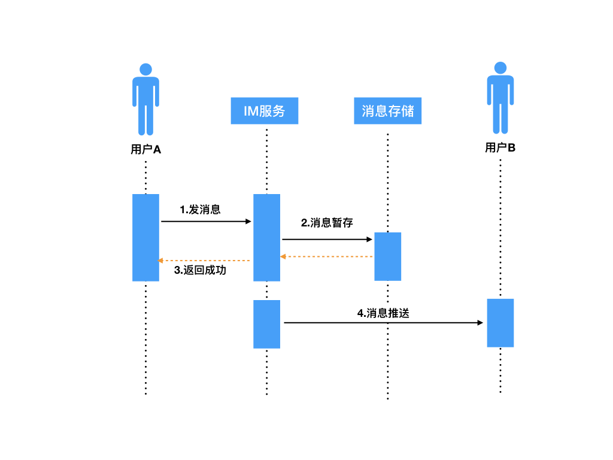
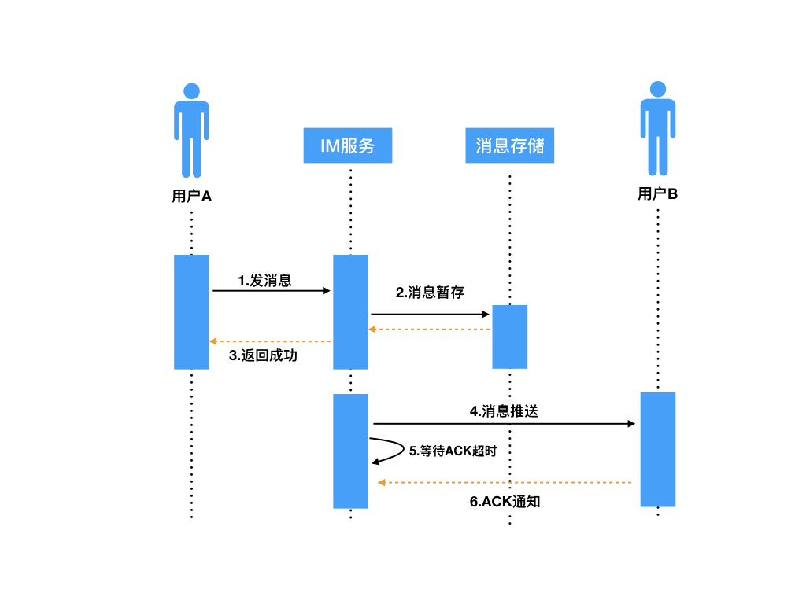
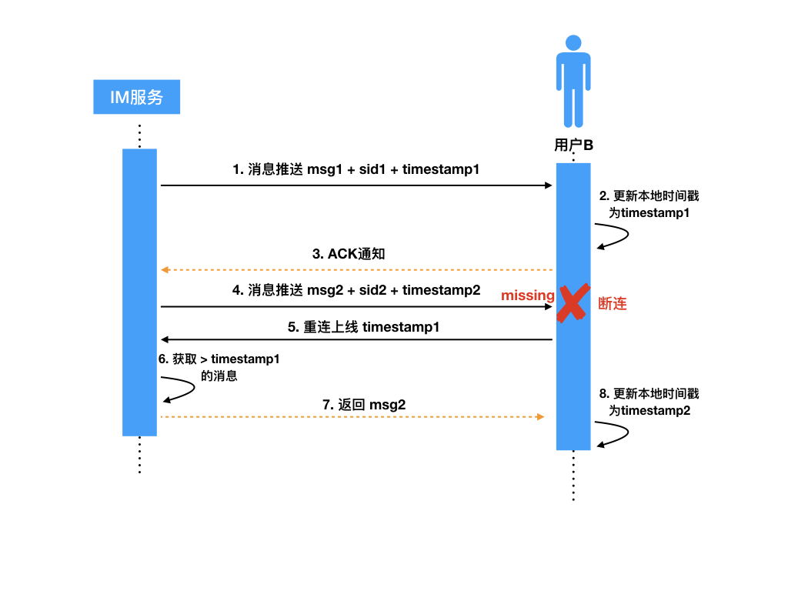

- 00 开篇词 搞懂“实时交互”的IM技术，将会有什么新机遇？.md.html
- 01 架构与特性：一个完整的IM系统是怎样的？.md.html
- 02 消息收发架构：为你的App，加上实时通信功能.md.html
- 03 轮询与长连接：如何解决消息的实时到达问题？.md.html
- 04 ACK机制：如何保证消息的可靠投递？.md.html
- 05 消息序号生成器：如何保证你的消息不会乱序？.md.html
- 06 HttpDNS和TLS：你的消息聊天真的安全吗？.md.html
- 07 分布式锁和原子性：你看到的未读消息提醒是真的吗？.md.html
- 08 智能心跳机制：解决网络的不确定性.md.html
- 09 分布式一致性：让你的消息支持多终端漫游.md.html
- 10 自动智能扩缩容：直播互动场景中峰值流量的应对.md.html
- 11 期中实战：动手写一个简易版的IM系统.md.html
- 12 服务高可用：保证核心链路稳定性的流控和熔断机制.md.html
- 13 HTTP Tunnel：复杂网络下消息通道高可用设计的思考.md.html
- 14 分片上传：如何让你的图片、音视频消息发送得更快？.md.html
- 15 CDN加速：如何让你的图片、视频、语音消息浏览播放不卡？.md.html
- 16 APNs：聊一聊第三方系统级消息通道的事.md.html
- 17 Cache：多级缓存架构在消息系统中的应用.md.html
- 18 Docker容器化：说一说IM系统中模块水平扩展的实现.md.html
- 19 端到端Trace：消息收发链路的监控体系搭建.md.html
- 20 存储和并发：万人群聊系统设计中的几个难点.md.html
- 21 期末实战：为你的简约版IM系统，加上功能.md.html
- 22 答疑解惑：不同即时消息场景下架构实现上的异同.md.html
- 结束语 真正的高贵，不是优于别人，而是优于过去的自己.md.html
- 捐赠
04 ACK机制：如何保证消息的可靠投递？
你好，我是袁武林。
在第一节的课程中，我们说到了即时消息系统中的四个重要特性，实时性、可靠性、一致性、安全性。
上一节课我们从如何保证消息实时性方面，了解了业界常用的一些方式以及背后具体的原理。那么今天我们接着来讲一讲，在即时消息的系统架构设计里，如何来保证消息的可靠投递。
首先，我们来了解一下，什么是消息的可靠投递？
站在使用者的角度来看，消息的可靠投递主要是指：消息在发送接收过程中，能够做到不丢消息、消息不重复两点。
这两个特性对于用户来讲都是非常影响体验的。我们先说一下不丢消息。
试想一下，你把辛辛苦苦攒到的零花钱打赏给了中意的“主播小姐姐”，但由于系统或者网络的问题，这条对你来说至关重要的打赏消息并没有成功投递给“主播小姐姐”，自然也就没有后续小姐姐和你一对一的互动环节了，想想是不是很悲剧？
消息重复也不用多说，谁也不愿意浪费时间在查看一遍又一遍的重复内容上。
那么在一般的IM系统的设计中，究竟是如何解决这两大难题的呢？下面我们结合一些简单的案例，来看一看“不丢消息”“消息不重复”这些能力，在技术上到底是怎么实现的。
消息丢失有哪几种情况？
我们以最常见的“服务端路由中转”类型的IM系统为例（非P2P），这里解释一下，所谓的“服务端路由中转”是指：一条消息从用户A发出后，需要先经过IM服务器来进行中转，然后再由IM服务器推送给用户B，这个也是目前最常见的IM系统的消息分发类型。
我们可以把它和少数P2P类型区别一下，P2P类型的消息投递是直接由用户A的网络发送到用户B的网络，不经过服务端路由。
那么，我们来假设一个场景：用户A给用户B发送一条消息。接下来我们看看哪些环节可能存在丢消息的风险？

参考上面时序图，发消息大概整体上分为两部分：
- 用户A发送消息到IM服务器，服务器将消息暂存，然后返回成功的结果给发送方A（步骤1、2、3）；
- IM服务器接着再将暂存的用户A发出的消息，推送给接收方用户B（步骤4）。
其中可能丢失消息的场景有下面这些。
在第一部分中。步骤1、2、3都可能存在失败的情况。
由于用户A发消息是一个“请求”和“响应”的过程，如果用户A在把消息发送到IM服务器的过程中，由于网络不通等原因失败了；或者IM服务器接收到消息进行服务端存储时失败了；或者用户A等待IM服务器一定的超时时间，但IM服务器一直没有返回结果，那么这些情况用户A都会被提示发送失败。
接下来，他可以通过重试等方式来弥补，注意这里可能会导致发送重复消息的问题。
比如：客户端在超时时间内没有收到响应然后重试，但实际上，请求可能已经在服务端成功处理了，只是响应慢了，因此这种情况需要服务端有去重逻辑，一般发送端针对同一条重试消息有一个唯一的ID，便于服务端去重使用。
在第二部分中。消息在IM服务器存储完后，响应用户A告知消息发送成功了，然后IM服务器把消息推送给用户B的在线设备。
在推送的准备阶段或者把消息写入到内核缓冲区后，如果服务端出现掉电，也会导致消息不能成功推送给用户B。
这种情况实际上由于连接的IM服务器可能已经无法正常运转，需要通过后期的补救措施来解决丢消息的问题，后续会详细讲到，这里先暂且不讨论。
即使我们的消息成功通过TCP连接给到用户B的设备，但如果用户B的设备在接收后的处理过程出现问题，也会导致消息丢失。比如：用户B的设备在把消息写入本地DB时，出现异常导致没能成功入库，这种情况下，由于网络层面实际上已经成功投递了，但用户B却看不到消息。所以比较难处理。
上面两种情况都可能导致消息丢失，那么怎么避免这些异常情况下丢消息的问题呢？- 一般我们会用下面这些相应的解决方案：
针对第一部分，我们通过客户端A的超时重发和IM服务器的去重机制，基本就可以解决问题；
针对第二部分，业界一般参考TCP协议的ACK机制，实现一套业务层的ACK协议。
解决丢失的方案：业务层ACK机制
我们先解释一下ACK，ACK全称 Acknowledge，是确认的意思。在TCP协议中，默认提供了ACK机制，通过一个协议自带的标准的ACK数据包，来对通信方接收的数据进行确认，告知通信发送方已经确认成功接收了数据。
那么，业务层ACK机制也是类似，解决的是：IM服务推送后如何确认消息是否成功送达接收方。具体实现如下图：

IM服务器在推送消息时，携带一个标识SID（安全标识符，类似TCP的sequenceId），推送出消息后会将当前消息添加到“待ACK消息列表”，客户端B成功接收完消息后，会给IM服务器回一个业务层的ACK包，包中携带有本条接收消息的SID，IM服务器接收后，会从“待ACK消息列表”记录中删除此条消息，本次推送才算真正结束。
ACK机制中的消息重传
如果消息推给用户B的过程中丢失了怎么办？比如：
- B网络实际已经不可达，但IM服务器还没有感知到；
- 用户B的设备还没从内核缓冲区取完数据就崩溃了；
- 消息在中间网络途中被某些中间设备丢掉了，TCP层还一直重传不成功等。
以上的问题都会导致用户B接收不到消息。
解决这个问题的常用策略其实也是参考了TCP协议的重传机制。类似的，IM服务器的“等待ACK队列”一般都会维护一个超时计时器，一定时间内如果没有收到用户B回的ACK包，会从“等待ACK队列”中重新取出那条消息进行重推。
消息重复推送的问题
刚才提到，对于推送的消息，如果在一定时间内没有收到ACK包，就会触发服务端的重传。收不到ACK的情况有两种，除了推送的消息真正丢失导致用户B不回ACK外，还可能是用户B回的ACK包本身丢了。
对于第二种情况，ACK包丢失导致的服务端重传，可能会让接收方收到重复推送的消息。
针对这种情况，一般的解决方案是：服务端推送消息时携带一个Sequence ID，Sequence ID在本次连接会话中需要唯一，针对同一条重推的消息Sequence ID不变，接收方根据这个唯一的Sequence ID来进行业务层的去重，这样经过去重后，对于用户B来说，看到的还是接收到一条消息，不影响使用体验。
这样真的就不会丢消息了吗？
细心的你可能发现，通过“ACK+超时重传+去重”的组合机制，能解决大部分用户在线时消息推送丢失的问题，那是不是就能完全覆盖所有丢消息的场景呢？
设想一下，假设一台IM服务器在推送出消息后，由于硬件原因宕机了，这种情况下，如果这条消息真的丢了，由于负责的IM服务器宕机了无法触发重传，导致接收方B收不到这条消息。
这就存在一个问题，当用户B再次重连上线后，可能并不知道之前有一条消息丢失的情况。对于这种重传失效的情况该如何处理？
补救措施：消息完整性检查
针对服务器宕机可能导致的重传失效的问题我们来分析一下，这里的问题在于：服务器机器宕机，重传这条路走不通了。
那如果在用户B在重新上线时，让服务端有能力进行完整性检查，发现用户B“有消息丢失”的情况，就可以重新同步或者修复丢失的数据。
比较常见的消息完整性检查的实现机制有“时间戳比对”，具体的实现如下图：

下面我们来看一下“时间戳机制”是如何对消息进行完整性检查的，我用这个例子来解释一下这个过程。
- IM服务器给接收方B推送msg1，顺便带上一个最新的时间戳timestamp1，接收方B收到msg1后，更新本地最新消息的时间戳为timestamp1。
- IM服务器推送第二条消息msg2，带上一个当前最新的时间戳timestamp2，msg2在推送过程中由于某种原因接收方B和IM服务器连接断开，导致msg2没有成功送达到接收方B。
- 用户B重新连上线，携带本地最新的时间戳timestamp1，IM服务器将用户B暂存的消息中时间戳大于timestamp1的所有消息返回给用户B，其中就包括之前没有成功的msg2。
- 用户B收到msg2后，更新本地最新消息的时间戳为timestamp2。
通过上面的时间戳机制，用户B可以成功地让丢失的msg2进行补偿发送。
需要说明的是，由于时间戳可能存在多机器时钟不同步的问题，所以可能存在一定的偏差，导致数据获取上不够精确。所以在实际的实现上，也可以使用全局的自增序列作为版本号来代替。
小结
保证消息的可靠投递是IM系统设计中至关重要的一个环节，“不丢消息”“消息不重复”对用户体验的影响较大，我们可以通过以下手段来确保消息下推的可靠性。
- 大部分场景和实际实现中，通过业务层的ACK确认和重传机制，能解决大部分推送过程中消息丢失的情况。
- 通过客户端的去重机制，屏蔽掉重传过程中可能导致消息重复的问题，从而不影响用户体验。
- 针对重传消息不可达的特殊场景，我们还可以通过“兜底”的完整性检查机制来及时发现消息丢失的情况并进行补推修复，消息完整性检查可以通过时间戳比对，或者全局自增序列等方式来实现。
最后，给你留一个思考题：有了TCP协议本身的ACK机制，为什么还需要业务层的ACK机制？
你可以给我留言，我们一起讨论，感谢你的收听，我们下期再见。
© 2019 - 2023 Liangliang Lee. Powered by gin and hexo-theme-book.